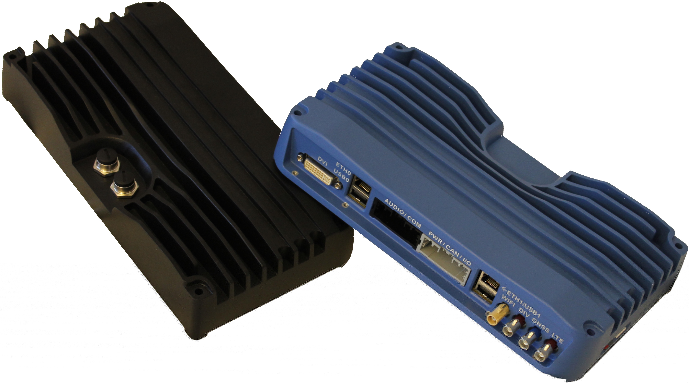
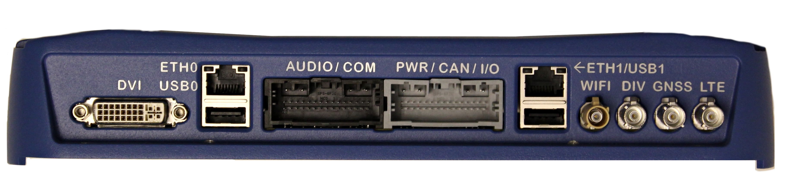
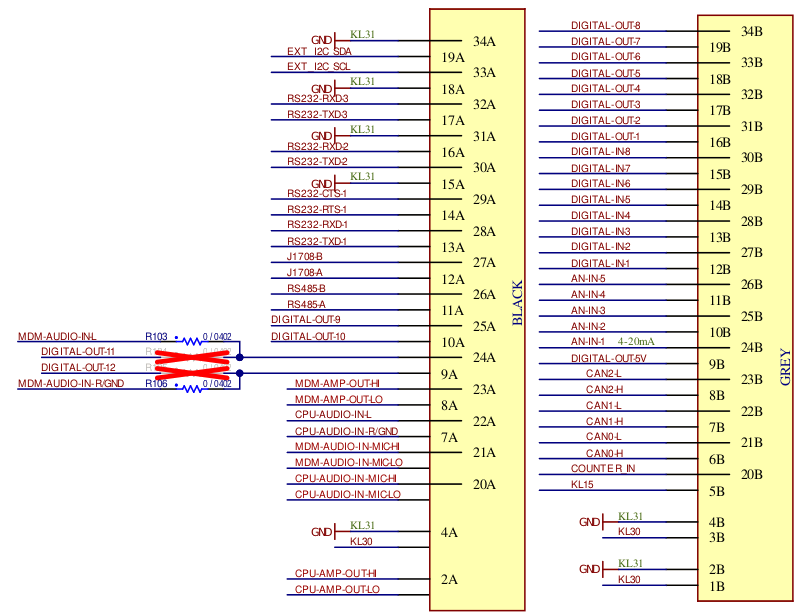

Platform MX-V
Overview and installation⚓︎

Connectors⚓︎
The MX-V has the following connectors accessible from the outside.

- DVI connector for display
- two RJ45 Ethernet ports
- two USB type A connectors
- antenna connectors for GPS, WiFi and mobile
- 34-pin I/O connector, including serial interfaces, see below
- 34-pin I/O connector, including power and CAN, see below
- SDHC card slot
- SIM card slot
- Optional M12 connectors for ethernet (can not be combine with RJ45 ports)
I/O connectors⚓︎

Power⚓︎
KL30 is positive power terminal (red) and KL31 is negative (black). The units start when KL15 (yellow ignition input) is connected to positive input (e.g. battery voltage).
Digital out⚓︎
The digital out channels can both source and sink a load. When sourcing, enabling the channel (output pin) connects it to battery voltage, while sinking connects the channel to ground.
Analog/Digital in⚓︎
The (5+8) analog/digital in channels can measure voltages up to 32V. The difference lies in the hardware filtering where analog is filtered at 25Hz and digital at 250Hz.
Initial setup⚓︎
-
Connect either Ethernet connector to a router to get an IP address through DHCP. Alternatively, connect a male to male USB-A cable between the MX-V and your workstation for direct network access.
-
You can also access the machine without a workstation by connecting a computer monitor along with a keyboard.
-
Connect the MX-V harness to a power supply in the range 9 to 32V. Then nominal voltage is 24V.
The MX-V boots automatically when power and ignition are applied. The boot time depends on the configuration. For the current development build with a lot of things enabled it takes about 15 seconds.
Operating system⚓︎
The Host Mobility MX-V platform runs a custom built GNU/Linux operating system. The current kernel version is 4.19. To load the kernel, the U-Boot bootloader is used. The operating system for the MX-V is installed on the on-board eMMC memory. It contains the U-boot, kernel image plus device tree as well as the root file system.
The MX-V is delivered with the operating system installed and you can login through a secure shell (SSH).